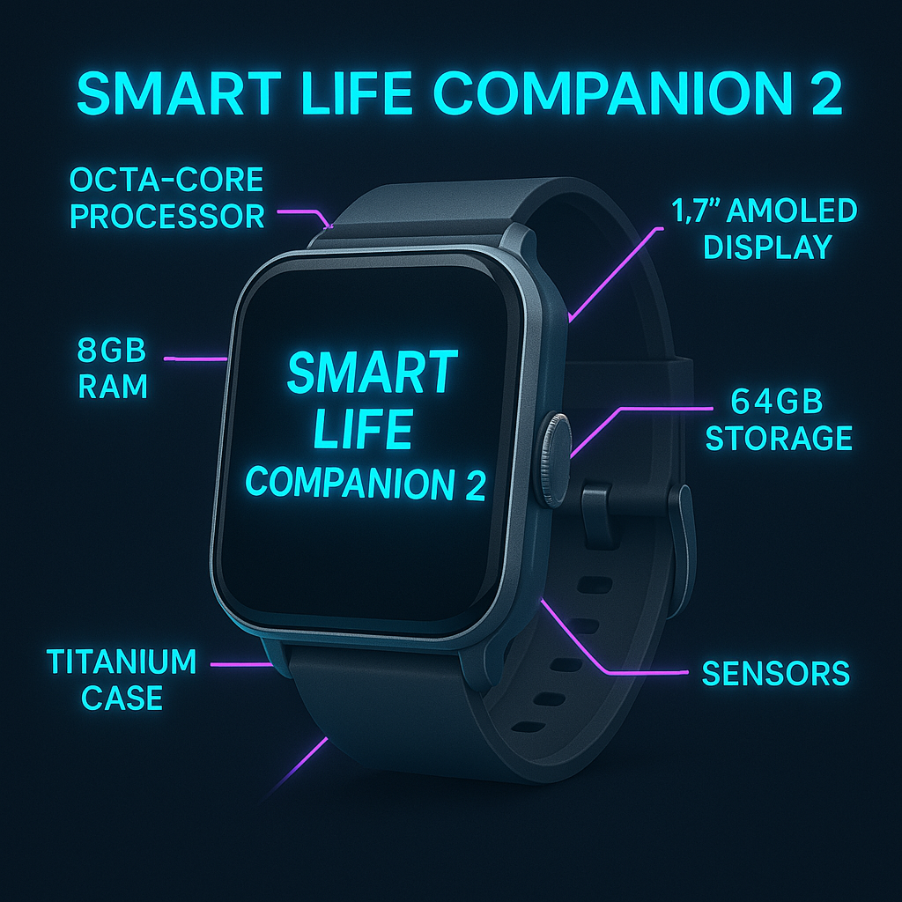

Build Specifications
The Smart Life Companion 2 is engineered with next-gen components for unparalleled performance. See the architecture diagram and specs for FTG Tracker 2.0 below.

- Processor: Octa-core 2.5 GHz ARM Cortex-A76
- Memory: 8GB LPDDR5 RAM
- Storage: 64GB UFS 3.1
- Display: 1.7-inch AMOLED, 400x400 resolution, 3D touch
- Sensors: Heart rate, SpO2, glucose, UV, pressure, air quality
- Connectivity: Bluetooth 5.2, Wi-Fi 6, 5G
- Battery: 500mAh, up to 72 hours, wireless charging
- Material: Aerospace-grade titanium and sapphire glass
- Weight: 50 grams
- Water Resistance: IP69